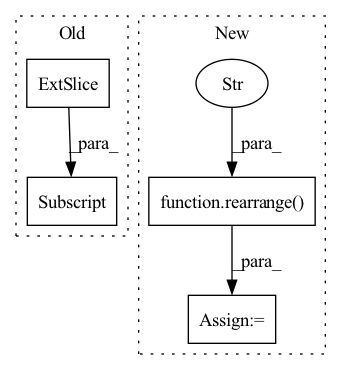

Pattern ID :2668
Before Change
gate = self.norm(gate)
weight, bias = self.weight, self.bias
weight, bias = weight[:, :n, :n], bias[:, :n]
mask = torch.ones(weight.shape[:2], device = device).triu_(1).bool()
weight = weight.masked_fill(mask[..., None], 0.)
After Change
gate = rearrange(gate, "b w n (h d) -> b w h n d", h = h)
gate = einsum("b w h n d, h m n -> b w h m d", gate, weight)
gate = gate + rearrange( bias, "h n -> () () h n ()" )
gate = rearrange(gate, "b w h n d -> b w n (h d)")
out = gate * res
out = rearrange(out, "b w n d -> b (w n) d")
return out[:, :n]
In pattern: SUPERPATTERN
Frequency: 5
Non-data size: 4
Instances Fragment ID: 15142055
Project Name: lucidrains/g-mlp-gpt
Commit Name: a2f065dfcf7be1d1e4b205ac1a55de4ad1b3327d
Time: 2021-05-20
Author: lucidrains@gmail.com
File Name: g_mlp_gpt/g_mlp_gpt.py
M Class Name: CausalSpatialGatingUnit
N Class Name: CausalLocalSGU
M Method Name: forward(2)
N Method Name: forward(2)
M Parent Class: nn.Module
N Parent Class: nn.Module
M File Name: g_mlp_gpt/g_mlp_gpt.py
N File Name: g_mlp_gpt/g_mlp_gpt.py
M Start Line: 90
M End Line: 100
N Start Line: 130
N End Line: 154
Before Change
j_pos = torch.arange(wsz, device = device)
grid = torch.stack(torch.meshgrid(i_pos, j_pos))
grid = rearrange(grid, "c i j -> (i j) c")
rel_ij = grid[:, None] - grid[None, :]
rel_pos_bias = self.dpb(rel_ij.float())
sim = sim + rel_pos_bias
After Change
pos = torch.arange(-wsz, wsz + 1, device = device)
rel_pos = torch.stack(torch.meshgrid(pos, pos))
rel_pos = rearrange( rel_pos, "c i j -> (i j) c" )
biases = self.dpb(rel_pos.float())
rel_pos_bias = biases[self.rel_pos_indices]
sim = sim + rel_pos_bias Fragment ID: 15142054
Project Name: lucidrains/vit-pytorch
Commit Name: b69b5af34f7759948425113f6dc3b30dfb91d4d1
Time: 2021-11-22
Author: lucidrains@gmail.com
File Name: vit_pytorch/crossformer.py
M Class Name: Attention
N Class Name: Attention
M Method Name: forward(2)
N Method Name: forward(2)
M Parent Class: nn.Module
N Parent Class: nn.Module
M File Name: vit_pytorch/crossformer.py
N File Name: vit_pytorch/crossformer.py
M Start Line: 139
M End Line: 144
N Start Line: 152
N End Line: 156
Before Change
h = self.block1(x)
if exists(self.mlp):
h += self.mlp(time_emb)[:, :, None, None]
h = self.block2(h)
return h + self.res_conv(x)
After Change
if exists(self.mlp):
assert exists(time_emb), "time emb must be passed in"
condition = self.mlp(time_emb)
h = h + rearrange( condition, "b c -> b c 1 1" )
h = self.net(h)
return h + self.res_conv(x)
Fragment ID: 15142035
Project Name: lucidrains/denoising-diffusion-pytorch
Commit Name: 91cff459394b784f870f3998023439796c95b7ca
Time: 2022-01-25
Author: lucidrains@gmail.com
File Name: denoising_diffusion_pytorch/denoising_diffusion_pytorch.py
M Class Name: ResnetBlock
N Class Name: ConvNextBlock
M Method Name: forward(3)
N Method Name: forward(3)
M Parent Class: nn.Module
N Parent Class: nn.Module
M File Name: denoising_diffusion_pytorch/denoising_diffusion_pytorch.py
N File Name: denoising_diffusion_pytorch/denoising_diffusion_pytorch.py
M Start Line: 162
M End Line: 165
N Start Line: 147
N End Line: 152
Before Change
return rearrange(logits, "b (s d) n -> b s d n", d = depth)
logits = logits[..., :-1, :]
preds = rearrange(logits, "b ... c -> b c (...)")
labels = rearrange(ids, "b s d -> b (s d)")
After Change
depth_tokens = rearrange(depth_tokens, "(b s) d f -> b s d f", b = b)
logits = self.to_logits(depth_tokens)
logits = rearrange( logits, "b ... f -> b (...) f" )
logits = logits[:, :(seq_len + 1)]
if not return_loss:
logits = logits[:, 1:] Fragment ID: 15142041
Project Name: lucidrains/rq-transformer
Commit Name: 74477d913a78ceaaa628a9fff470218443c78114
Time: 2022-04-14
Author: lucidrains@gmail.com
File Name: rq_transformer/rq_transformer.py
M Class Name: RQTransformer
N Class Name: RQTransformer
M Method Name: forward(3)
N Method Name: forward(3)
M Parent Class: nn.Module
N Parent Class: nn.Module
M File Name: rq_transformer/rq_transformer.py
N File Name: rq_transformer/rq_transformer.py
M Start Line: 211
M End Line: 271
N Start Line: 227
N End Line: 266
Before Change
out = rearrange(u_f * K_f, "... h d -> ... (h d)")
out = irfft(out, seq_len * 2, dim = -2)[..., :seq_len, :]
return out + residual
class GatedDsConv(nn.Module):After Change
out = conv1d_fft(u, K, dim = -3, weight_dim = -2)
out = rearrange( out, "... h d -> ... (h d)" )
return out + residual
class GatedDsConv(nn.Module): Fragment ID: 15142040
Project Name: lucidrains/gated-state-spaces-pytorch
Commit Name: b0c0e2150b8a4be3a2ddf560e3eba823addb2188
Time: 2022-07-02
Author: lucidrains@gmail.com
File Name: gated_state_spaces_pytorch/dsconv.py
M Class Name: EfficientDsConv
N Class Name: EfficientDsConv
M Method Name: forward(2)
N Method Name: forward(2)
M Parent Class: nn.Module
N Parent Class: nn.Module
M File Name: gated_state_spaces_pytorch/dsconv.py
N File Name: gated_state_spaces_pytorch/dsconv.py
M Start Line: 44
M End Line: 64
N Start Line: 64
N End Line: 80